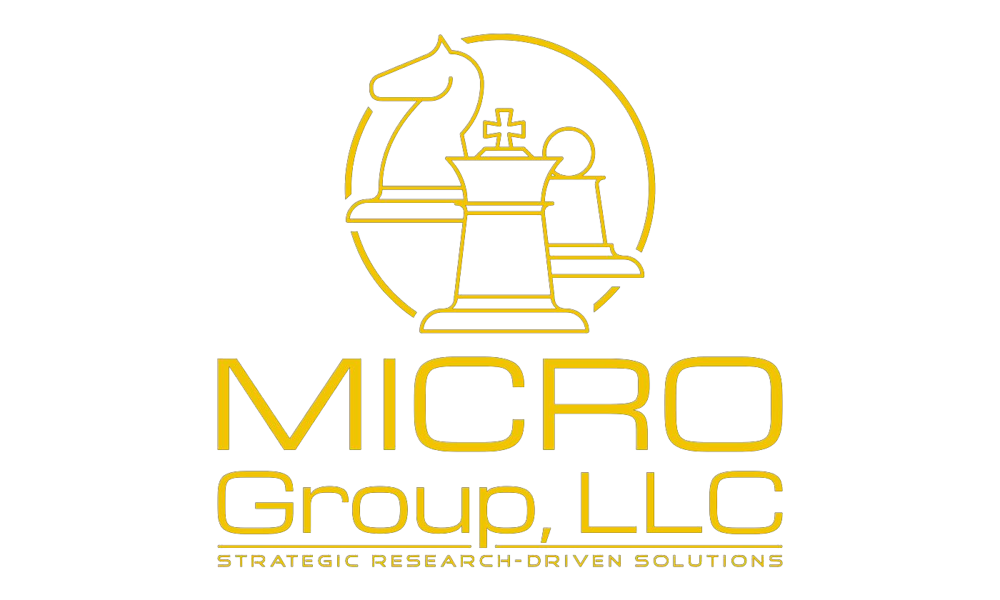

A measured approach to your goals.
A multi-service strategic and research-driven consultancy, dedicated to serving nonprofit, education, and government institutions through expertise in Management, Integration, Culture, Research, and Operations.
Meet the founder
Mission.
To provide strategic, research-driven consultative solutions.
Vision.
To become a trusted partner in guiding institutions toward excellence and sustainability.
Values.
A client-centric institution committed to integrity, innovation, and collaboration.
Approach.
We tailor our work to the unique needs and goals of your organization, building lasting impact on your mission-focused objectives.
“A measured approach to your goals.”
Core subjects of expertise
MICRO stands for the five focuses that guide every engagement. Each is offered on its own or woven together into a tailored solution.